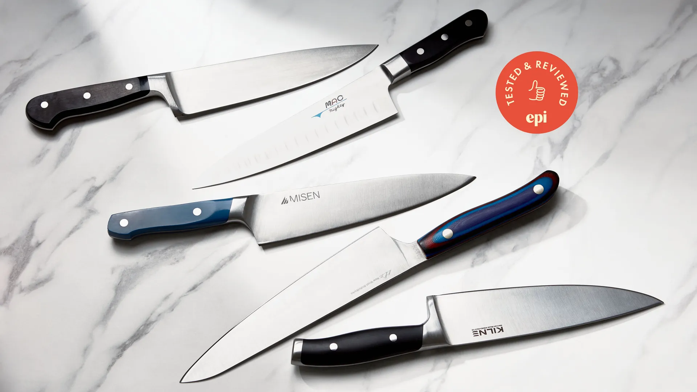
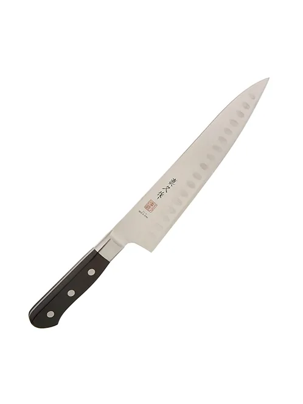
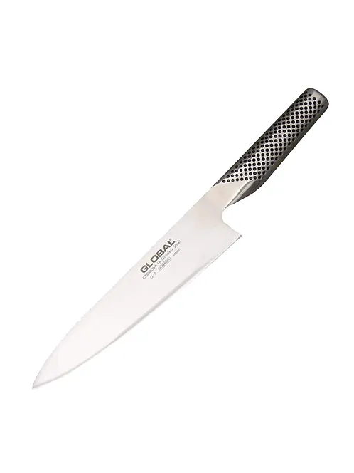
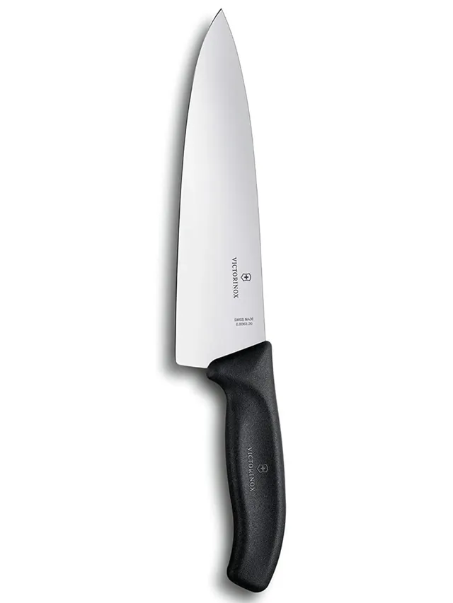
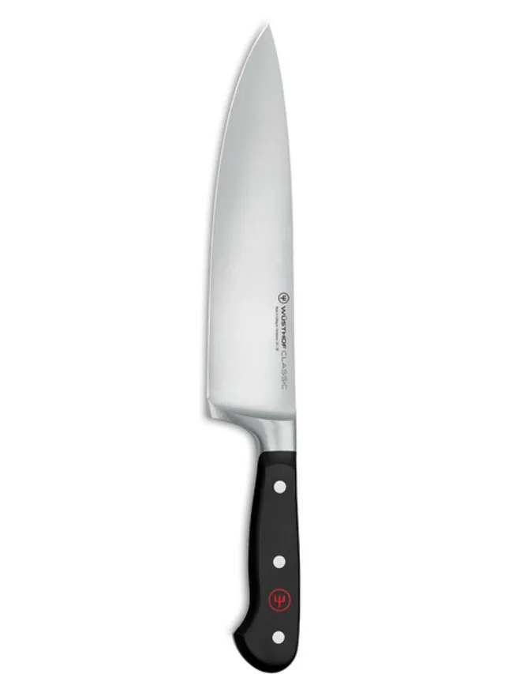

After extensive testing, we’ve found the best chef’s knives for home cooks and professionals. These knives balance sharpness, comfort, and durability.
Here are our top picks:
Best Overall: MAC Mighty MTH-80
The MAC Mighty is incredibly sharp, well-balanced, and easy to maintain. Its thin blade and comfortable handle make slicing effortless.
Best High-End: Shun Classic 8-Inch Chef’s Knife
With a Damascus-clad blade and elegant design, the Shun Classic is razor-sharp and perfect for precise cutting tasks.
Best Budget: Victorinox Fibrox Pro 8-Inch
Affordable yet effective, the Victorinox Fibrox Pro has a grippy handle and sharp blade, making it an excellent choice for budget-conscious cooks.
Best Japanese-Style: Global G-2
The Global G-2 is lightweight and ultra-sharp, featuring a stainless steel handle for a sleek and modern feel.
Best for Professionals: Wüsthof Classic Ikon
The Wüsthof Classic Ikon offers exceptional balance and durability, making it a favorite among professional chefs.